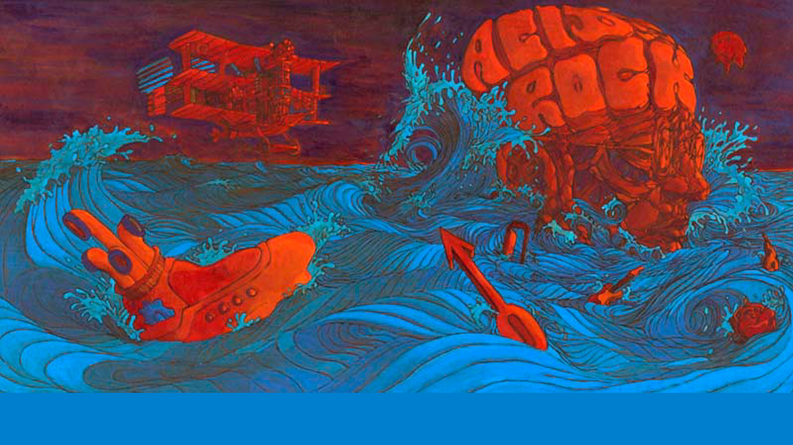

ACID ROCK
El término de rock ácido proviene de la popularidad que llegó a tener el consumo de una droga llamada dietilamida de ácido lisérgico, también conocida como LSD o simplemente ácido, que los jóvenes consumían en fiestas donde esta droga corría libremente, mientras que una banda improvisaba música psicodélica especialmente acorde con ese ambiente alucinógeno.
Los creadores de rock ácido eran, generalmente, bandas muy influenciadas por los distintos efectos causados por el consumo de drogas psicotrópicas (básicamente el ácido), la espiritualidad oriental, el esoterismo y en ocasiones también la política. A nivel musical, este subgénero está muy influenciado por la música hindú, el jazz, el folk o el blues, y claro está, el movimiento psicodélico.
Los instrumentos más identificativos de este subgénero musical son la batería, mayormente con doble bombo, el bajo, la guitarra rítmica y la solista y un cantante, el cual a veces aparece tocando uno de los anteriores instrumentos. A veces encontramos también un teclado. La manera en que se toca la guitarra cobra especial importancia en el rock ácido. La amplificación de las guitarras y el uso de efectos innovadores o el procesamiento electrónico se usa a menudo para engrosar el sonido. El resultado, aunque pueda parecer simple, es bastante potente, lo cual era básicamente su objetivo.
Algunos de los artistas y grupos más destacados del acid rock fueron Jimi Hendrix, Eric Clapton en el grupo Cream o The Doors, por poner algunos ejemplos. Otros grupos también representativos de esta música pueden ser The count five, The electric prunes, The sparrow, The seeds, SRC, Afterglow o Attila.
